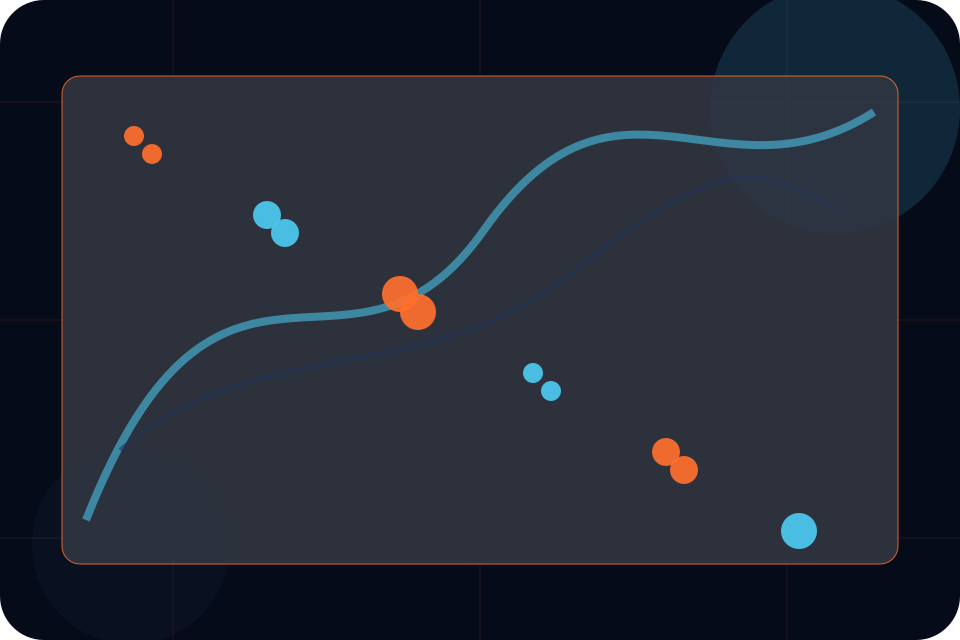
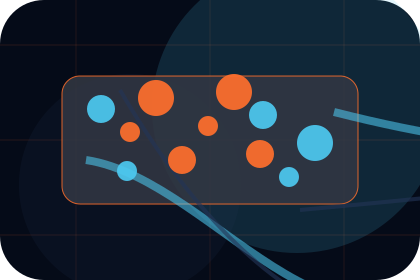
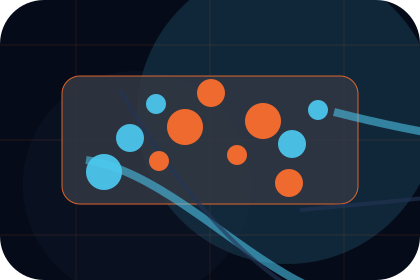
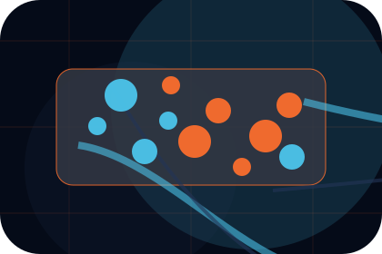
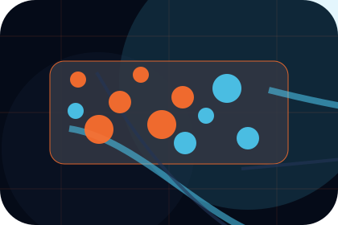
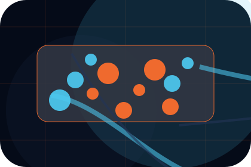
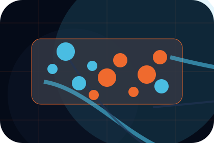
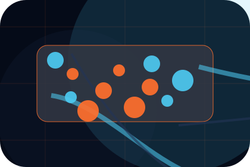
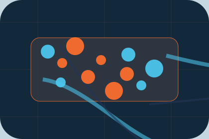

Context
Roles gives the page a specific angle instead of repeating the navigation label.
Careers / 01
Careers opens as a clear aviation decision hub: what Aero offers, who it helps, why it matters, and which route to take first.
The first screen combines positioning, proof, primary action, and fast internal navigation, so people can act immediately or compare the rest of the careers route with context.
Aerospace velocity hero
Select the closest route and Aero keeps the next step, proof, and follow-up expectation aligned with safety and premium reliability.

Careers / 02
Roles adds dark context to the careers route, using the supersonic operations deck structure to support safety and premium reliability before visitors choose a next step.
Aero uses fleet specification cards and focused copy to make the decision easier to scan, aligning the section with safety and premium reliability rather than filling space.
Explore CareersRoles gives the page a specific angle instead of repeating the navigation label.
The fleet specification cards show what to compare, what to avoid, and what matters most for aviation, aerospace & air services visitors.
The final cue points to a useful internal route so the section keeps the journey moving.
Careers / 03
Pilots adds dark context to the careers route, using the supersonic operations deck structure to support safety and premium reliability before visitors choose a next step.
Aero uses fleet specification cards and focused copy to make the decision easier to scan, aligning the section with safety and premium reliability rather than filling space.
Explore Careers
Pilots gives the page a specific angle instead of repeating the navigation label.

The fleet specification cards show what to compare, what to avoid, and what matters most for aviation, aerospace & air services visitors.

The final cue points to a useful internal route so the section keeps the journey moving.
Careers / 04
Engineers adds dark context to the careers route, using the supersonic operations deck structure to support safety and premium reliability before visitors choose a next step.
Aero uses fleet specification cards and focused copy to make the decision easier to scan, aligning the section with safety and premium reliability rather than filling space.
Explore CareersEngineers gives the page a specific angle instead of repeating the navigation label.
The fleet specification cards show what to compare, what to avoid, and what matters most for aviation, aerospace & air services visitors.

The final cue points to a useful internal route so the section keeps the journey moving.
Careers / 05
Operations adds dark context to the careers route, using the supersonic operations deck structure to support safety and premium reliability before visitors choose a next step.
Aero uses fleet specification cards and focused copy to make the decision easier to scan, aligning the section with safety and premium reliability rather than filling space.
Explore CareersOperations gives the page a specific angle instead of repeating the navigation label.
The fleet specification cards show what to compare, what to avoid, and what matters most for aviation, aerospace & air services visitors.
The final cue points to a useful internal route so the section keeps the journey moving.
Careers / 06
Requirements adds dark context to the careers route, using the supersonic operations deck structure to support safety and premium reliability before visitors choose a next step.
Aero uses fleet specification cards and focused copy to make the decision easier to scan, aligning the section with safety and premium reliability rather than filling space.
Explore CareersAero structures requirements around context, judgment, and a clear next route so visitors can compare the block quickly before they request a charter.
Request CharterCareers / 07
Culture adds dark context to the careers route, using the supersonic operations deck structure to support safety and premium reliability before visitors choose a next step.
Aero uses fleet specification cards and focused copy to make the decision easier to scan, aligning the section with safety and premium reliability rather than filling space.
Explore CareersCulture gives the page a specific angle instead of repeating the navigation label.

The fleet specification cards show what to compare, what to avoid, and what matters most for aviation, aerospace & air services visitors.

The final cue points to a useful internal route so the section keeps the journey moving.
Careers / 08
Benefits defines the better state Aero is built to create, with enough detail to make the promise believable.
An aviation site with speed-led hero, aircraft spec cards, route modules, safety proof, and charter enquiry. The section grounds that direction in concrete benefits, visible tradeoffs, and a next route visitors can use when the promise feels relevant.
Explore CareersBenefits defines what becomes clearer, easier, or safer when Aero is the chosen route.
Careers / 09
Aero closes the careers route with a clear action, a quick reminder of the value, and a low-friction way to request a charter.
Visitors who are ready can use the primary action. Visitors who are still comparing can scan the section links, proof, and support routes before they request a charter.
Request CharterUse the primary CTA when the fit is clear and timing matters.
Review linked proof, questions, and support routes if more context is needed.

Aero keeps the next reply focused on scope, timing, and the right first step.
Careers / 10
Aero closes the careers route with a clear action, a quick reminder of the value, and a low-friction way to request a charter.
Visitors who are ready can use the primary action. Visitors who are still comparing can scan the section links, proof, and support routes before they request a charter.
Request CharterThe final block keeps the choice simple: act now, compare one more proof route, or send enough detail for a focused response.
Request Chartersafety and premium reliability
An aviation site with speed-led hero, aircraft spec cards, route modules, safety proof, and charter enquiry. Careers ends with a direct path to request a charter, plus enough context for visitors who still need to compare.

Request CharterInformation is provided for planning and should be reviewed for the final client, location, and operating rules.